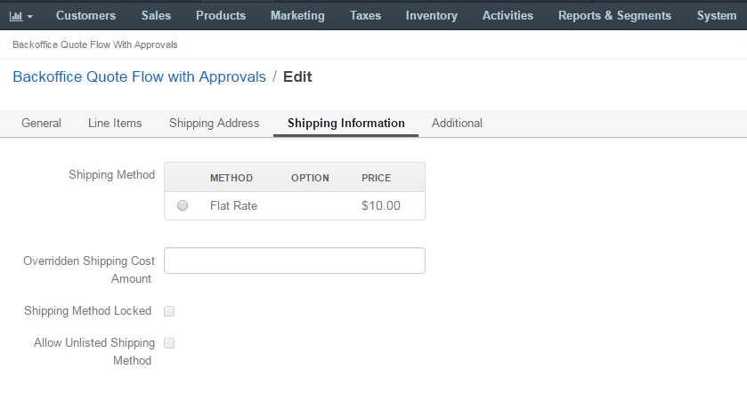

When editing the quote, a sales person may limit the shipping methods visible to customer.
To limit the shipping methods per quote:
Navigate to Sales > Quotes in the main menu.
Hover over the More Options menu to the right of the necessary quote and click to start editing its details.
In the Shipping Information section, configure the shipping options available for the customer:
In the Shipping Methods list, tick the boxes next to the shipping methods that you would like the customer to use for this order delivery.
Note
When none of the methods are selected, the customer can use any of the listed methods.
Note
Once you change the existing settings, the previous configuration will be saved for your information in the Previously Selected Shipping Method log above the list of the shipping methods.
If necessary, select the preferred shipping method from the Default Shipping Method list. The customer will be able to change the option to any other available shipping method.
Optionally, enter the Overridden Shipping Cost Amount, USD - a custom shipping cost that will be used instead of the one dynamically generated based on the shipping method selection.
To enforce using only the default Shipping method, enable Shipping Method Locked flag.
Tick the Allow Unlisted Shipping Methods box to allow using the shipping method that is already selected as a default one, even if it is disabled in this quote configuration.